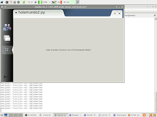

Hola mundo 2da versión con hildon y python
Posted on Sun 23 March 2008 in Debian, maemo, Nokia N810, Python • 1 min read
La segunda versión del hola mundo se basará en el framework hildon el cual permite manejar el look,temas del entorno de maemo, acceso a barra de herramientas y menus.
#!/usr/bin/env python2.5
import gtk
import hildon
window = hildon.Window()
window.connect("destroy", gtk.main_quit)
label = gtk.Label("Hola mundo!")
window.add(label)
label.show()
window.show()
gtk.main()
Captura de pantalla de la ejecución del script:
